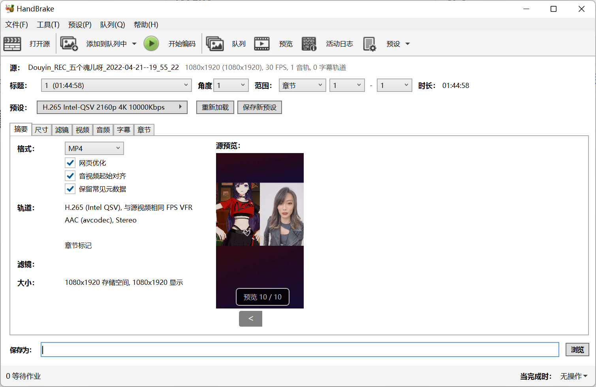
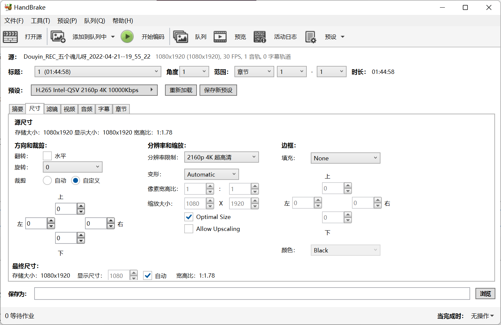
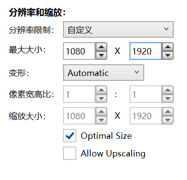
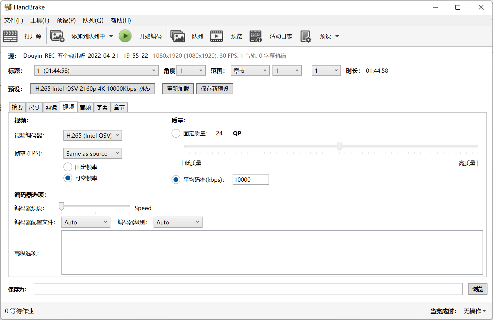
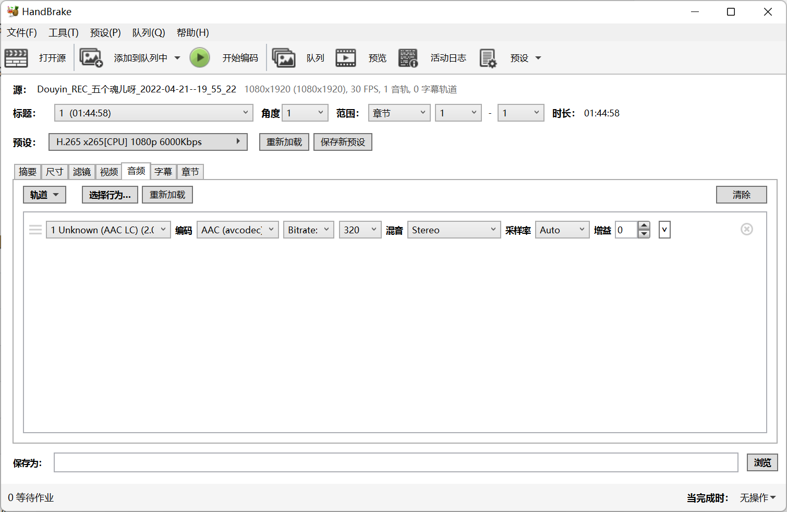
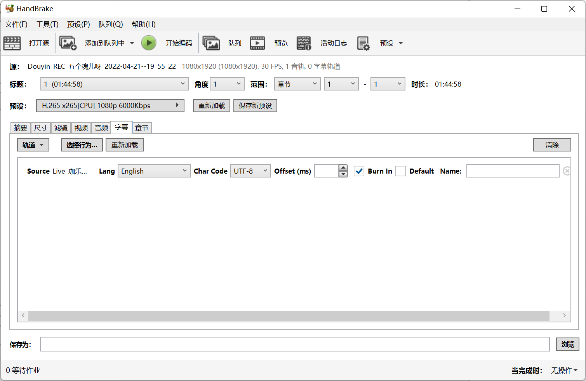
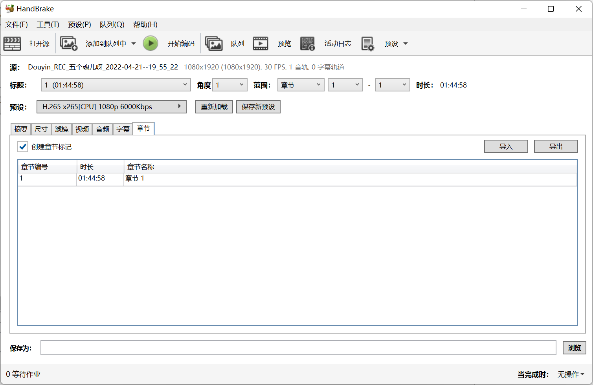

使用 HandBrake 压制视频
HandBrake 是一款开源软件，他支持将几乎所有格式的视频转换到目标格式，并支持使用 Intel/NVIDIA/AMD/Apple/高通 arm 设备的视频加速编码器，以加快编码过程。
使用预定义预设
这些预先定义的预设将大部分情况都涵盖了。默认采取的是 H.265(HEVC) 进行编码，可按需求自行调整。
您可以根据需求与硬件能力，在压制过程中可以参考使用这些预设。
| Intel QSV | NVEnc | CPU |
|---|---|---|
| 4K 源片帧率 | 4K 源片帧率 | 4K 源片帧率 |
| 1080p 源片帧率 | 1080p 源片帧率 | 1080p 源片帧率 |
| 1080p 源片帧率 抖音竖屏源用 | 1080p 源片帧率 抖音竖屏源用 | 1080p 源片帧率 抖音竖屏源用 |
自行定义配置

- 建议开启：
- 网页优化 - 将重排 MP4 文件，便于审核与使用网盘等服务在线观看
- 音视频起始对齐 - 可以改善时间戳问题导致的音画不同步
- 可选开启：
- 保留常见元数据

-
需要修改：
-
根据源视频的分辨率，选择适当分辨率
-
如为抖音、录制抖音源等竖屏场景，需要改为“自定义”，并且扭转宽和高。（如 1080p 竖屏为
1080*1920）
-
-
余下的配置，除非您清楚正在做什么，否则没有必要修改。

-
需要修改：
-
视频编码器
-
根据制作过程中的实际情况，选择必要且合适的视频编码器。
敬请参阅：建议 HEVC
建议您使用 HEVC 编码以获得最好的压缩比。一般的，显卡也对会 HEVC 进行优化，导出会更方便。
如果您没有相关硬件，相关的编码器不会展示。
苹果 Mac
（适用于 M1 芯片的 Mac 电脑）AMD 显卡
（适用于核心显卡、APU 显示单元及独显）NVIDIA 显卡 Intel 显卡
（适用于核心显卡及 Xe 独显）处理器编码 H.264 (VideoToolbox) H.265 VCN H.264 NVENC H.264 QSV H.264 x264 H.265 (VideoToolbox) H.264 VCN H.265 NVENC H.265 QSV H.265 x265 H.265 10bit (VideoToolbox) H.265 QSV 10Bit H.265 x265 10Bit
-
-
帧率如果不确定可以不做修改。一般适用 60。
- 为了编码速度，可以考虑可变帧率。
-
质量
-
一般使用平均码率，请参阅下表综合考虑。
-
建议 x264/x265 用户开启 2-Pass（二次编码） 以防止撕裂。
上传源(3000Kbps) 哔哩哔哩压制-4K 哔哩哔哩压制-1080P高码率/60FPS 哔哩哔哩压制-1080P 4K 60FPS H.265 15903 4779 2390 4K 30FPS H.264 15916 4775 2390 1080P 60FPS H.265 - 4778 2390 1080P 60FPS H.264 - 4777 2388
-
-
编码器预设
- 一般工作中会选择最快的那个（Speed/UltraSpeed）。
- 如果活不急，可以用 Normal/Quality 这些高品质配置来压片。这样成片效果更好。
-
-
余下的配置，除非您清楚正在做什么，否则没有必要修改。

-
必须调整：
- 比特率 320
-
余下的配置，除非您清楚正在做什么，否则尽量不要修改。

- 导入弹幕/字幕：
- 轨道 -> 导入字幕 -> 选择文件
- 勾选 Burn In（烧录）

- 本页不影响 B 站投稿，没有调整的必要。